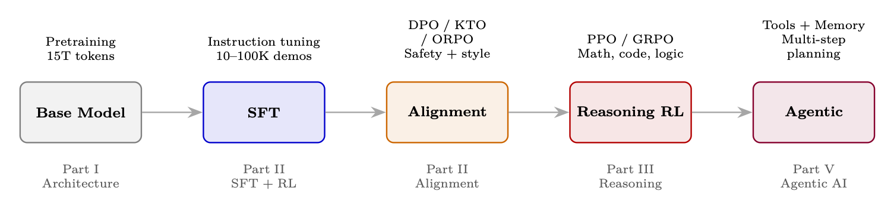

本章概览
本节聚焦“本章概览”的定义、机制与工程含义。
具备目标导向、工具使用、环境交互和多步执行能力的 AI 系统。
能够感知状态、规划行动、调用工具并迭代完成任务的系统单元。
以自注意力为核心的序列建模架构。
根据查询、键和值计算上下文加权表示的机制。
序列内部各位置之间相互关注的注意力机制。
免责声明
本文件是由作者单独准备的独立调查和教育资源。的 本文表达的观点、意见和结论仅代表作者个人观点，并不一定 反映作者现在或曾经工作过的任何雇主、组织或机构的观点 附属。 本作品不包含任何专有、机密或商业秘密信息。全部引用 材料取自公开来源，包括同行评审出版物、开放获取 预印本、官方文档和开源存储库。 内容按“原样”提供，不提供任何形式的明示或暗示的保证。作者 对于信息的准确性、完整性或适用性不做任何陈述 任何特定目的。读者应独立验证任何声明、公式或实现 在将它们应用到生产系统之前的详细信息。 欢迎反馈。如果您发现任何错误、不准确之处，或有改进建议， 我们鼓励您将反馈发送至 [first_name]r@gmail.com。 人工智能披露。大型语言模型被用作研究和起草辅助工具。所有内容均是 由作者尽力编辑和验证。 执照。本作品已获得 Creative Commons Attribution-ShareAlike 4.0 许可 国际许可证（CC BY-SA 4.0）。您可以自由分享（复制和重新分发）和改编 （重新混合、转换和构建）此材料用于任何目的，包括商业目的，前提是您 给予适当的信用，提供许可证的链接，表明是否进行了更改，并分发任何
同一许可下的衍生作品。完整许可文本：https://creativecommons.org/licenses/by-sa/4.0/。
关于作者
Haggai Roitman 在人工智能研究和大规模研究的交叉领域花费了二十多年的时间 生产系统。他的工作连接了理论和实践——从发表基础研究到 为数百万用户提供服务的运输系统。 他的研究兴趣涵盖信息检索、推荐系统、自然语言处理、 大型语言模型、LLM强化学习和智能体式 AI。他创作了更多 发表超过 100 篇同行评审出版物，并拥有约 100 项专利。他获得了理学士学位（暨 Laude）和以色列理工学院 Technion 博士。 当不考虑梯度流和KV 缓存时，可以在一组转盘后面找到他， 混合渐进式 trance 和深屋 (deep house)。
前言
为什么存在本指南
在 2026 年构建智能体式 AI 系统需要掌握非常广泛的知识—— 从 Transformer 如何内部处理语言，到硬件和系统 训练的可能性、使其高效的优化技术、强化学习 教模型推理并与人类意图保持一致的算法，一直到多智能体 大规模协调自治系统的架构。
这些知识分散在数百篇论文、博客文章、GitHub 存储库和部落中 少数实验室的知识。本指南的存在是因为从业者需要一个单一的、统一的 涵盖整个堆栈的参考资料 - 不仅仅是理论，还有实现细节 让事情真正发挥作用。
智能体式 AI 的个人之旅
我对智能体的迷恋始于二十年前，当时我还在学习第一个智能体。 信息系统工程学位。我学习了面向智能体的软件工程课程 (AOSE) [1] 并学习了使用 JADE 构建多智能体系统 [2] (Java Agent DEvelopment Framework）——一个符合 FIPA 标准的 [3] 平台，智能体通过结构化协议进行通信， 就共享资源进行协商并自主协调。大约在同一时间，伯纳斯·李， Hendler 和 Lassila 的开创性论文“语义网”[4]描绘了机器可读的愿景 智能体可以推理的知识。这两个线程——自主智能体架构和 语义知识表示——播下一颗种子，从此引导我的职业生涯。早一 使这一愿景具体化的项目是尝试建立一个购物智能体——与 OntoBuilder [5] 在我尊敬的未来学术顾问 Avigdor Gal 教授的指导下 可以自动填充不同异构产品搜索查询和订单的系统 网站，通过本体匹配和映射来了解其不同的模式。语义学 Web 承诺，此类智能体将在结构化、机器可读数据的世界中蓬勃发展。在 实践、手工制作本体的脆弱性、现实世界产品数据的混乱以及 缺乏强大的自然语言理解能力使得这一愿景永远“遥遥无期”。
在接下来的几年里，我跟踪了人工智能的每一波进展：神经网络和 组合优化的启发式搜索；深度学习和表征学习；信息 大规模检索和个性化；最近，大型语言模型的革命。 每一次浪潮都带来了强大的新工具，但梦想始终如一：系统能够理解、 理性，并在复杂的环境中自主行动。
2024-2026 年的非凡之处在于，这些线索终于汇聚在一起。LLM提供 语言理解和生成；强化学习教会他们推理并与 人类意图；工具使用协议（MCP）让他们能够在世界上采取行动；和智能体编排 框架提供了 JADE 二十年前设想的协调层——现在由 基础模型而不是手工编码的本体。从很多方面来说，本指南都是我的参考 希望我在那段旅程的每一步都如此。
2026年的风景
当今的智能体式 AI 系统的历程跨越了三十年的复合突破 架构、训练和部署：
1. 架构基础（2017-2020）：Transformer [6]将自注意力引入为 通用序列处理原语。缩放定律表明，较大的模型接受过训练 更多数据可靠地改进。 GPT-2 和 GPT-3 证明了仅解码器Transformer， 充分扩展，成为有能力的小样本学习者。
2. 系统和效率（2020-2023）：FlashAttention [7] 使训练速度提高了 2-4 倍 消除内存瓶颈。 LoRA [8] 支持在单个节点上微调 70B+ 模型。 混合专家 (MoE) 将模型容量与计算成本分离。推理引擎如 vLLM 使实时应用程序能够达到吞吐量。
3. 通过 RL 进行对齐（2022-2024）：RLHF [9] 改造了有能力但无用的基础模型 成为有用的助手——ChatGPT 背后的秘诀。 DPO [10] 瓦解了奖励模型 和 RL 循环成单个监督损失，从而实现对齐的民主化。变种激增： KTO [11]、IPO [12]、ORPO [13]、GRPO [14]。
4. 推理和自治（2024-2026）：DeepSeek-R1 [15] 和 OpenAI 的 o1/o3 恶魔 指出强化学习可以教授推理本身——模型自发地发现思维链， 回溯和自我验证。同时，模型上下文协议（MCP）标准 标准化工具访问、智能体到智能体 (A2A) 支持智能体间通信以及生产- 等级编排框架已经成熟。
本指南适合谁
本文档是为构建事物的从业者编写的：
• 需要了解Transformer内部结构、训练基础设施、优化的机器学习工程师 化，以及为什么事情会出现分歧。
• 应用研究人员评估架构、微调策略和强化学习方法 他们的特定领域。
• 构建需要编排模式、内存的生产系统的智能体开发人员 架构、工具集成（MCP）和多智能体协调（A2A）。
• 系统工程师负责训练基础设施、GPU 集群、分布式训练、 和推理部署。
• 技术领导者在整个堆栈中制定架构和资源决策。
我们假设熟悉神经网络和基本概率。没有之前的 LLM、RL 或 需要系统知识——该指南以首要原则为基础。
您将获得什么
阅读本指南后，您将能够：
• 了解LLM的内部机制——注意力机制、位置编码、MoE路由、 FlashAttention，以及为什么架构选择对下游功能很重要。
• 关于系统的原因 — GPU 内存预算、分布式训练策略（FSDP、 张量/流水线并行性）、推理优化以及使用 vLLM 进行生产部署。
• 高效训练和微调——LoRA/QLoRA、量化、知识蒸馏、 优化器选择和学习率调度。
• 使模型与人类偏好保持一致——实施 RLHF/DPO/GRPO/KTO 流水线， 调试奖励黑客和模式崩溃，在 20 多种方法中选择正确的算法。
• 构建推理模型 — 了解 DeepSeek-R1、o1/o3 和 QwQ 如何发现链 - 通过 RL 进行思考，无需明确的演示。
• 架构智能体系统——选择编排模式、设计内存、集成工具 通过 MCP，通过 A2A 协调智能体，根据生产基准测试进行评估。
• 严格评估——应用适当的指标、基准测试和LLM法官模式 对于模型质量和智能体能力。
本指南的结构
该指南共有 29 章，分为五个部分：
1. 第一部分 — 基础（第 1-3 章）：LLM 架构和优化（Transformer、 注意力、位置编码、FlashAttention、LoRA、MoE）、系统基础（GPU 层次结构、分布式训练、vLLM）和经典 RL 理论（MDP、策略梯度、 演员评论家）。
2. 第二部分——LLM的强化学习方法（第 4-12 章）：LLM的完整强化学习工具包。 语言模型的 RL 基础，然后对 PPO、DPO、GRPO 进行全面的数学处理， 和偏好优化变体（在线 DPO、KTO、IPO、ORPO、SimPO）、奖励 模型训练、SFT 最佳实践、大规模系统架构以及智能体训练 轨迹级强化学习。
3. 第三部分 — 推理（第 13 章）：大型推理模型 — DeepSeek-R1、OpenAI o1/o3/o4-mini，QwQ — RL 如何发现思想链、MCTS、过程奖励模型、 和测试时计算缩放。
4. 第四部分 — 评估（第 14 章）：综合 LLM 评估方法 — 指标、LLM作为法官、人工注释、基准测试套件、污染检测和 智能体评价。
5. 第五部分 — 智能体 AI（第 15-26 章）：完整的智能体堆栈 — 简介 智能体式 AI、RAG 和检索、记忆系统、编排和上下文管理、设计 模式、智能体环境和基准测试、模型上下文协议 (MCP)、智能体技能、 智能体到智能体通信 (A2A)、多智能体系统、开发框架和 智能体用户界面。
6. 第六部分 — 评估和参考（第 27-29 章）：108 个详细测验问题 包含涵盖所有主题的全面答案，快速参考章节巩固了关键 方程、API 参考和故障模式诊断，以及未来方向的结论。
该指南包含 100 多个详细的测验问题，并提供涵盖所有领域的全面答案 主题，以及一个快速参考章节，其中整合了关键方程、API 参考和故障模式 诊断。
设计理念
本文件遵循三个原则：
1.先入为主,后入形式主义. 每个方程式前都有一个简单的英文解释 及其意义和原因
2. 了解执行情况。 理论无用而不知如何使. 我们包括 代码、超参数表、内存预算、架构图和调试策略 整个
3. 诚实地对待什么是可行的。 我们明确指出哪些方法经过生产试验, 这是研究探索。
B. 范围和故意的遗漏
本指南侧重于文本输入、文本输出语言模型和 RL、系统和智能体 围绕它们建造的基础设施。 几个重要领域被故意排除在外:
• 多式联运模式(视觉-语言、音频、视频)。 采用多式联运结构 不同的训练流水线(连续训练前、跨模式调整、模式特定) 编码器、数据校正挑战以及每个书长的评价协议 治疗。 包括他们就可以在不加深RL和智能体核心的情况下把范围翻一番 他使这个向导统一。
• 具体领域部署(保健、法律、金融、科学发现)。 域名 适应提出了监管方面的限制、专门评价和数据获取问题, 与本文介绍的一般方法相对应。 我们的算法和架构 封面是指适应这些领域的构件从业人员,但适应细节 提供专门的参考资料会更好。
• 个性化和建议制度。 个性化依赖于用户模型, 协作过滤和形成平行研究的互动历史架构 传统 虽然推荐人系统越来越多地使用LLM,但核心技术 (后续型号、以土匪为主的勘探、冷启动处理)具有充分的独特性,足以 需要单独报道
通过保持这个边界,我们保持单一的连贯线条——从建筑地基 通过产生对齐和推理模型的训练算法, - 安排和部署自主智能体——不将叙述分散到不同地点 模式和纵向。 - 哈盖·罗特曼,2026年
简介
大局观
本指南将带您从基本原理到生产系统。是为实践者而写的 - 研究人员、工程师和应用科学家 - 他们想要理解和构建完整的堆栈 现代人工智能：从Transformer架构和运行它们的硬件，到训练 使模型与人类意图保持一致并教它们推理的算法，以及智能体架构 将它们部署为自治系统。 核心论点很简单：构建出色的人工智能系统需要了解整个流程，而不是 只有一层。调试训练运行的工程师需要了解 GPU 内存层次结构 和优化器动态。微调从业者需要知道 LoRA 何时足够以及何时 全参数训练是值得的。智能体开发人员需要了解底层如何 模型被训练。评估框架的技术领导者需要了解哪些权衡 每个人都做。本指南提供了完整的图片。
智能体式 AI之路：简史
今天的智能体式 AI 系统并不是凭空出现的。他们建立了数十年的里程碑系统 ——每个人解决一个较小的问题，但共同构建技术、硬件和雄心 这使得自主智能体成为可能。
1. Deep Blue (1997) [16] — IBM 的国际象棋引擎击败了世界冠军 Garry Kasparov 带有手工评估函数的强力搜索（2 亿个位置/秒）。它 事实证明，机器可以在明确定义的对抗领域中超越人类的表现，但是 泛化到别的什么都没有。
2. IBM Watson——危险边缘！ (2011) [17] — Watson 组合信息检索、NLP、 以及在开放域问答中击败人类冠军的大规模并行性。它 证明人工智能可以大规模处理非结构化文本，但需要多年的领域研究 特定的工程，如果没有大量的人力努力就无法学习新的领域。
3. AlexNet and the Deep Learning Revolution (2012) [18] — Krizhevsky 等人的 CNN 获胜 ImageNet 以惊人的优势证明了在 GPU 上训练的深度神经网络可以 从原始数据中学习表示。这个单一结果引发了现代深度学习时代 以及最终使LLM成为可能的硬件投资。
4. AlphaGo (2016) [19]——DeepMind 的系统击败了围棋世界冠军李世石 (Lee Sedol) 深度强化学习（政策网络+价值网络+蒙特卡罗树搜索）。与深蓝不同的是 AlphaGo 学会了用蛮力下棋——证明 RL 可以掌握以下领域： 仅靠搜索就很棘手（10170 个董事会状态）。 AlphaGo Zero（2017）[20]后来了解到 完全来自自我游戏，根本不需要人类游戏。
5. GPT-2/GPT-3 (2019–2020) [21] — OpenAI 表明，缩放仅解码器Transformer 数十亿个参数产生了紧急的小样本学习。 GPT-3（175B参数）可以 执行从未明确训练过的任务——翻译、算术、代码生成—— 简单地从上下文示例中得出。基础模型时代开始了。
6. AlphaFold (2020) [22] — DeepMind 解决了 50 年的蛋白质折叠问题，预测 具有原子精度的 3D 蛋白质结构。 AlphaFold 证明深度学习可以 解决以前认为需要几十年才能解决的基本科学问题。还展示了 架构创新的力量（对残基对的关注）与大规模相结合 计算。
7. ChatGPT 和 RLHF (2022) [9] — InstructGPT/ChatGPT 证明了一个有能力的基础 当通过 RLHF 对齐时，模型将成为真正有用的助手。这就是拐点 要点：人工智能从一种研究工具变成了数亿人使用的消费品。的 对齐技术（奖励模型，PPO）成为所有后续LLM的模板 训练后。
8. GPT-4和多模态模型（2023）[23]——多模态能力（视觉+语言）， 更长的上下文和改进的推理推动LLM走向通用认知。工具 使用（代码解释器、网页浏览）暗示了智能体能力。
9. 推理模型 (2024) [15] — OpenAI 的 o1 和 DeepSeek-R1 表明 RL 可以 教模型推理：思路、回溯、自我验证油然而生 仅来自奖励信号。模型开始解决竞赛级别的数学和复杂问题 编码任务。
10. Agentic AI（2025年至今）——汇聚点：具有推理能力的LLM， 配备标准化工具访问（MCP）、智能体间通信（A2A）、持久 内存和复杂的编排框架。智能体现在可以自主编写代码， 进行研究、管理工作流程并与其他智能体进行协调——本文的主题 指导。
每个里程碑都有一个共同的弧线：架构创新+规模+学习信号= 突破。深蓝使用手工搜索。 AlphaGo 从自我对弈中学习。 GPT-3 从网络文字中学习到的。今天的智能体系统从人类反馈、可验证的奖励中学习， 和环境的相互作用。学习信号已从游戏结果扩展到开放式 人类的喜好——并且架构也不断发展以匹配。
本指南选取了基础模型时代的故事，并通过调整将其向前推进， 推理和自主机构。
你应该期待什么
第一部分：基础（第 1-3 章）构建指南其余部分所依赖的基础知识。 我们从LLM的内部工作方式开始——决定能力的架构决策—— 然后介绍使训练和推理成为可能的硬件和系统，最后介绍 从第一原理出发的强化学习。
• 第 1 章 — LLM 架构和优化：Transformer 内部结构（自注意力、 多头注意力、RoPE、GQA）、FlashAttention、优化方法（AdamW、学习 速率计划、梯度裁剪）、混合精度、LoRA/QLoRA、量化、知识 蒸馏和专家混合。
• 第 2 章 — 系统基础：GPU 架构 (A100/H100/B200)、内存 层次结构、NVLink/NVSwitch、分布式训练（FSDP、DeepSpeed ZeRO、张量/流水线 并行性）和用于高吞吐量推理的 vLLM。
• 第 3 章 — RL 简介：MDP、贝尔曼方程、TD 学习、Q 学习、 策略梯度（REINFORCE）、演员批评家方法、GAE——算法工具包 支撑第二部分。
第二部分：LLM的强化学习方法（第 4-12 章）是训练和调整的核心。在这里你 学习如何调整、改进和微调语言模型——从完整的数学推导到 工作代码。
• 第 4-8 章：每个主要的 RL/偏好算法以及数学、直觉和 TRL 代码 — PPO、DPO、GRPO 和偏好优化变体（在线 DPO、KTO、IPO、ORPO、 SimPO，N 次最佳）。
• 第 9-10 章：奖励模型训练（Bradley-Terry、缩放法则、奖励黑客）和 SFT 最佳实践（数据质量、课程、格式）。
• 第 11-12 章：大规模系统架构（解耦训练、容错、GPU 分配）和LLM智能体训练——如何用轨迹级别端到端地训练智能体 RL。
第三部分：推理（第 13 章）涵盖了模型能力的前沿——教授LLM 通过多步骤问题进行推理。
• 第 13 章 — 大型推理模型的强化学习：DeepSeek-R1、OpenAI o1/o3/o4-mini、 QwQ — RL 如何发现思想链、MCTS、过程奖励模型和测试时间 计算缩放。
第四部分：评估（第 14 章）提供了衡量其中任何一项的方法 实际上有效。
• 第 14 章 — LLM 评估：指标（困惑度、pass@k、ELO）、LLM 作为法官 模式、污染检测、基准测试套件和智能体评估方法。
第五部分：智能体式 AI（第 15-26 章）带您从经过训练的模型转变为部署的自主模型 系统。这是最大的部分，涵盖了智能体在现实世界中运作所需的一切。
• 第 15 章 — 智能体 AI 简介：是什么让系统成为智能体，频谱 从聊天机器人到自主智能体，以及第五部分其余部分的基本概念。
• 第 16 章 — RAG：检索方法、分块、嵌入模型、混合搜索、 重新排名和生产架构。
• 第 17 章 — 记忆系统：工作记忆、情景记忆、语义记忆和程序记忆 持久的智能体知识。
• 第 18 章 — 编排：ReAct、计划和执行、LLM 编译器、反射模式、 上下文管理和执行框架设计。
• 第 19 章 — 设计模式：提示链接、路由、并行化、评估驱动 编排和简单原则。
• 第 20 章 — 环境和基准测试：WebArena、SWE-bench、OSWorld、 GAIA——智能体能力的评估环境。
• 第 21 章 — 模型上下文协议 (MCP)：架构、传输层、工具/重新构建 源/提示原语、安全性和部署。
• 第22 章——智能体技能：技能库、工具组合和能力抽象。
• 第 23 章 — A2A 通信：Google 的智能体到智能体协议 — 智能体卡， 任务生命周期、流、企业模式。
• 第 24 章 — 多智能体系统：分层、辩论、市场和群体 架构——大规模协调。
• 第25章 — 开发框架：LangGraph、CrewAI、AutoGen、OpenAI智能体SDK、Google ADK — 与代码的分析比较。
• 第 26 章 — 智能体 UI：流接口、生成式 UI、画布范例、工具 可视化、人机交互模式。
现代人工智能流水线
从基本模型到部署智能体的完整流水线：
图 1：现代LLM开发流程：从预训练的基础模型到对齐和 推理到自主智能体能力。每个阶段都对应本指南的一部分。
